![]()
GİRİŞ
Bu çalışmada çok kategorili puanlanan maddelerden elde edilen bir veri seti kullanılmıştır. Çalışmanın ilk kısmında çok kategorili maddelere yönelik MTK analizleri yürütülmüştür. Daha sonra aynı veri seti iki kategorili verilere dönüştürülmüştür. Yine MTK süreçleri bu sefer de iki kategorili maddeler için yürütülmüştür. İzlenen adımlar şu şekildedir:
1. Çoklu puanlanan maddelere yönelik olarak;
- Uygun MTK modeli nedir?
- Bu modele göre madde ve test parametreleri nasıldır?
- İdeal ve sorunlu madde örnekleri nasıldır?
- Test bilgi fonksiyonunu nasıldır?
- Birey yetenek puanlarının dağılımı nasıldır?
2. Her bir maddeyi, kendi madde ortalamasından keserek 1-0 verisine dönüştürünüz. Buna göre iki kategorili puanlanan maddelere yönelik olarak;
- Uygun MTK modeli nedir?
- Bu modele göre madde ve test parametreleri nasıldır?
- İdeal ve sorunlu madde örnekleri nasıldır?
- Test bilgi fonksiyonunu nasıldır?
- Birey yetenek puanlarının dağılımı nasıldır?
Veri Ön Hazırlığı
Kullanılan paketleri listeleyelim:
Tabi ki işe öncelikle verinin working directory’den yüklenmesi ve ön düzenleme süreçleri ile başladık:
'data.frame': 531 obs. of 25 variables:
$ SIRA : int 1 2 3 4 5 6 7 8 9 10 ...
$ Fakulte : chr "Diger" "Diger" "Diger" "Diger" ...
$ Sinif : int 4 4 5 4 5 4 4 4 4 4 ...
$ Cinsiyet: chr "Kad\xfdn" "Kad\xfdn" "Kad\xfdn" "Kad\xfdn" ...
$ Ortalama: chr "2.88" "2.93" "3.12" "3.28" ...
$ L1 : int 2 1 2 2 1 3 3 1 1 2 ...
$ L2 : int 1 1 4 2 1 4 4 3 4 1 ...
$ L3 : int 2 4 4 3 1 4 3 1 4 4 ...
$ L4 : int 1 2 4 3 2 4 4 1 2 3 ...
$ L5 : int 2 4 4 4 2 5 4 1 3 4 ...
$ L6 : int 1 5 4 3 4 3 3 5 4 2 ...
$ L7 : int 2 1 4 3 5 4 4 1 2 3 ...
$ L8 : int 1 3 3 3 1 4 4 1 2 1 ...
$ L9 : int 2 1 4 4 1 3 5 1 3 4 ...
$ L10 : int 1 1 2 3 2 4 4 1 4 2 ...
$ L11 : int 2 1 4 3 3 4 5 4 3 2 ...
$ L12 : int 1 3 4 3 5 4 5 2 3 2 ...
$ L13 : int 2 1 2 2 1 2 3 1 1 4 ...
$ L14 : int 1 1 1 2 1 3 4 1 2 5 ...
$ L15 : int 3 3 4 3 2 3 4 1 2 4 ...
$ L16 : int 1 1 1 2 1 2 2 2 2 5 ...
$ L17 : int 2 2 2 2 1 3 4 1 2 4 ...
$ L18 : int 2 2 2 3 4 3 2 1 2 3 ...
$ L19 : int 2 2 2 3 2 4 3 1 4 2 ...
$ L20 : int 1 1 2 3 1 3 4 1 3 4 ...Veri setinde ilk sütunun sıra sayıları olduğunu görünce aman tanrım dedik ve sildik.
data1<-data1[,-1] Kayıp veri olup olmadığını anlamak için:
Neredeyse %8 oranında missing value var. Too much! Alayını atıyoruz. Artık adını da değiştirelim.
data2<- na.omit(data1)Madem ki öylesine bir veri seti ile öylesine bir analiz yapıyoruz ve practical kaygılarımız yok, veri setimizi büyütelim. 1000 kişi olsun:
Son olarak, veri setinde işimize yaramayacak bir sürü demografik detay var. Atıyoruz:
row.names(data3)<- NULL
data4<- data3[,5:24]Çalışmanın birinci araştırma sorusu kapsamında “data4” adlı veri seti kullanılmıştır. Bu veri seti 1000 gözlemden ve 20 değişkenden oluşmaktadır. Değişkenler, 1 ile 5 arasında bir tam sayı değeri almaktadır. Çalışmanın ikinci araştırma sorusu kapsamında ise her bir madde kendi madde ortalamasından kesilerek iki kategorili veriye dönüştürülmüştür. Bu aşamalar ilgili başlık altında raporlaştırılmıştır. Ön düzenlemelerin ardından araştırma sorularına cevap aramak için ileri analizlere devam edilmiştir.
1. Çok Boyutlu Maddelere Yönelik Aşamalar
Çalışmanın ilk araştırma sorusu kapsamında, yapılan analizler çok kategorili puanlanan maddeler üzerinden yürütülmüştür.
1.a. Varsayımların kontrolü ve uygun MTK modelinin belirlenmesi
Çok kategorili puanlanan maddelerden oluşan ölçeğin Madde Tepki Kuramı çerçevesinde incelenmesi sürecinde öncelikle uygun MTK modelinin belirlenebilmesi için varsayım kontrolleri yapılmıştır. Bu bağlamda, tek boyutluluk ve yerel bağımsızlık varsayımları ile model-veri uyumu kontrol edilmiştir. Tek boyutluluk varsayımı kontrolü için paralel analiz, yamaç birikinti grafiği ve faktör analizi kullanılmıştır. Bu aşamada kullanılan paketler: Psych ve GPArotation.
Paralel Analizden elde edilen yamaç birikinti grafiği şöyledir:
fa.parallel(data4, n.obs = 1000, cor = "poly")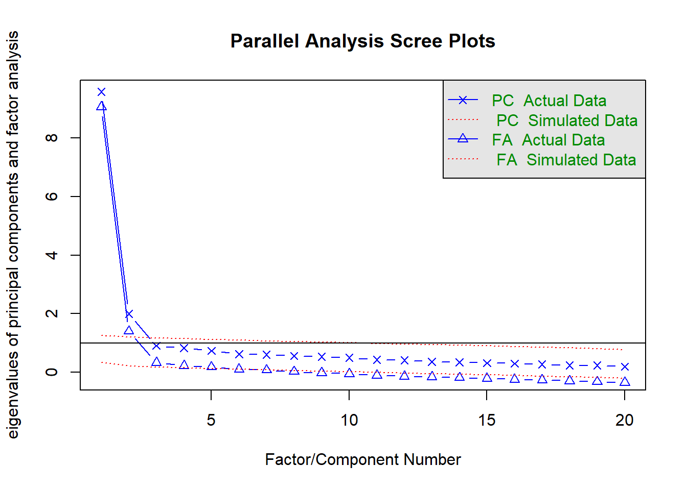
Parallel analysis suggests that the number of factors = 5 and the number of components = 2 Yamaç birikinti grafiği iki bileşenli bir yapıyı göstermektedir. Son olarak faktör analizi yardımı ile hem tek hem de iki bileşenli modeller oluşturulmuştur:
Bu iki modelin burada çıktılarını alsak baya uzun oluyor. Ama özetle; ben beğendiğim ve devam analizi için seçtiğim 2 faktörlü model ile devam ediyorum. Bu modelin çıktıları incelendiğinde, 1-12 numaralı maddelerin bir boyutta, 13-20 numaralı maddelerin ise diğer bir boyutta yüklendiği görülmektedir. Bu nedenle veri seti aşağıdaki adımlar izlenerek ikiye bölünmüş ve ileri analizler her iki faktör için de ayrı ayrı yürütülmüştür.
data4a<-data4[1:12]
data4b<-data4[13:20]Yerel bağımsızlık varsayımının kontrolü için Yen’in Q analizi (Yen, 1984) her iki bileşen için de uygulanmıştır. Bu süreçte sirt paketinden (Robitzsch, 2020) yararlanılmış ve aşağıdaki adımlar izlenmiştir.
Mod1 <- TAM::tam.mml( resp=data4a )
Mod1.wle <- TAM::tam.wle(Mod1)
Mod1.q3 <- sirt::Q3( dat=data4a, theta=Mod1.wle$theta, b=Mod1$item_irt[[3]] )
Mod2 <- TAM::tam.mml( resp=data4b )
Mod2.wle <- TAM::tam.wle(Mod2)
Mod2.q3 <- sirt::Q3( dat=data4b, theta=Mod2.wle$theta, b=Mod2$item_irt[[3]] )Bu üstteki kodun çıktısı çooook uzun. Buraya koymuyorum. Tabi biz veriyi bootstrap ile çoğalttığımız için bu varsayım karşılanmadı ama gerçek veri ile çalışsaydık bu varsayımın karşılanmaması durumunda çöp olacaktı analiz. Yani örneklem yetersiz, daha çok örneklem lazım diyecektik. Ya da modeli veya madde sayılarını inceleyecektik vs. vs.
Birinci araştırma sorusunun son aşamasında ise model veri uyumunun incelenmesi ve en uygun modelin seçilmesi yer almaktadır. Model-veri uyumu incelemesi ltm paketi (Rizopoulos, 2006) yardımı ile her iki bileşen için de ayrı ayrı GRM modeli ile yürütülmüştür. Her iki bileşende de model-1, ayırt edicilik düzeylerinin her madde için farklılaştığı modeli betimlemektedir. Model-2 ise ayırt edicilik düzeylerinin her madde için eşit tutulduğu modeldir.
model1_d4a<- grm(data4a)
model2_d4a<- grm(data4a, constrained = TRUE)
model1_d4b<- grm(data4b)
model2_d4b<- grm(data4b, constrained = TRUE)
anova(model2_d4a, model1_d4a)
Likelihood Ratio Table
AIC BIC log.Lik LRT df p.value
model2_d4a 31785.45 32025.93 -15843.72
model1_d4a 31660.51 31954.98 -15770.26 146.94 11 <0.001anova(model2_d4b, model1_d4b)
Likelihood Ratio Table
AIC BIC log.Lik LRT df p.value
model2_d4b 21742.58 21904.54 -10838.29
model1_d4b 21664.77 21861.08 -10792.38 91.81 7 <0.001Modeller arasında manidar farklılık anlamına gelen p değerlerine (<.05) sahip olmasının yanı sıra, Akaike ve Bayesian bilgi kriter değerleri en düşük olan modellerin her iki bileşen için de model-1 olduğu görülmektedir. Bu nedenle model-1 ile daha iyi bir model-veri uyumu sağlanmaktadır. Devam analizleri her iki bileşen için de model-1 ile yürütülmüştür.
1.b. Madde parametreleri
Model-veri uyumu sınandıktan ve en uygun model belirlendikten sonra, madde parametrelerinin incelenmesi aşamasına geçilmiştir. Model-1 üzerinden aşağıdaki kod satırları kullanılarak elde edilen madde parametreleri görülebilir.
coef(model1_d4a) Extrmt1 Extrmt2 Extrmt3 Extrmt4 Dscrmn
L1 -1.259 -0.119 0.576 1.625 2.361
L2 -0.994 0.224 1.002 2.265 1.383
L3 -1.157 -0.363 0.254 1.498 2.401
L4 -1.270 -0.276 0.610 1.718 2.355
L5 -1.130 -0.312 0.337 1.382 2.248
L6 -1.565 -0.657 0.322 1.309 1.895
L7 -1.061 -0.257 0.460 1.453 2.129
L8 -1.201 -0.401 0.314 1.367 2.635
L9 -1.102 -0.322 0.363 1.246 2.296
L10 -1.222 -0.295 0.476 1.473 1.815
L11 -1.218 -0.457 0.345 1.320 2.123
L12 -1.096 -0.249 0.737 1.819 1.661coef(model1_d4b) Extrmt1 Extrmt2 Extrmt3 Extrmt4 Dscrmn
L13 -0.665 0.150 0.830 1.786 2.353
L14 -0.791 0.148 0.917 1.802 2.290
L15 -1.388 -0.736 0.198 0.920 2.308
L16 -1.210 0.064 1.206 1.969 1.718
L17 -0.998 0.150 1.077 1.832 1.898
L18 -1.775 -0.720 0.598 1.664 1.338
L19 -1.751 -0.514 0.694 1.600 1.505
L20 -1.262 -0.351 0.505 1.277 2.007Tablo 4 incelendiğinde, her madde için eşik parametrelerinin beklendik bir şekilde birinciden dördüncüye doğru arttığı görülmektedir. Bazı maddelerin birinci eşik parametresinin -1’den daha büyük bir değerle başladığı dikkat çekmektedir. Örneğin ikinci bileşene ait ilk madde olan 13. Maddenin ilk kategorisini seçen bir bireyin yetenek seviyesi %50 ihtimalle -.66’dan daha düşüktür.
1.c. Örnek Madde Karakteristik Eğrileri
Çalışmanın bu aşamasında madde karakteristik eğrisi ideal ve sorunlu olan birer madde incelenmiş ve yorumlanmıştır. Bu nedenle, öncelikle birinci bileşeni oluşturan tüm maddelerin madde karakteristik eğrileri plot() fonksiyonu ile oluşturulmuştur. İdeal bir madde karakteristik eğrisine sahip olduğu düşünülen sekizinci madde ve kısmi sorunlu olduğu düşünülen ikinci maddenin madde karakteristik eğrileri aşağıdaki kod satırları yürütülerek oluşturulmuştur.
plot(model1_d4a, type="ICC",item=6, xlab= "YETENEK", cex.main = 1, main = "MADDE KARAKTERİSTİK EĞRİSİ- Madde: 6", ylab = "OLASILIK" , lwd= 2, col.main= "red", font.axis= 3, font.lab=2)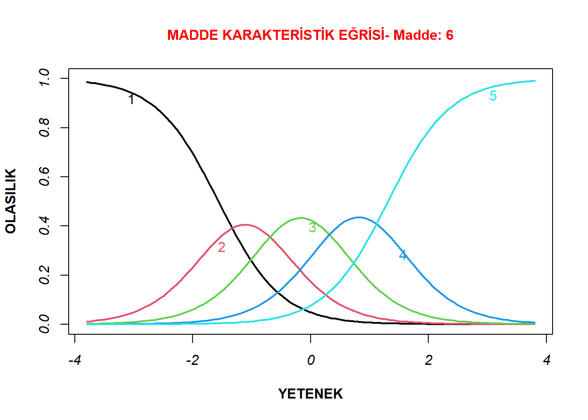
plot(model1_d4a, type="ICC",xlab= "YETENEK", cex.main = 1, ylab = "OLASILIK" , lwd= 2, col.main= "red", font.axis= 3, font.lab=2, main = "MADDE KARAKTERİSTİK EĞRİSİ- Madde: 2", items = 2)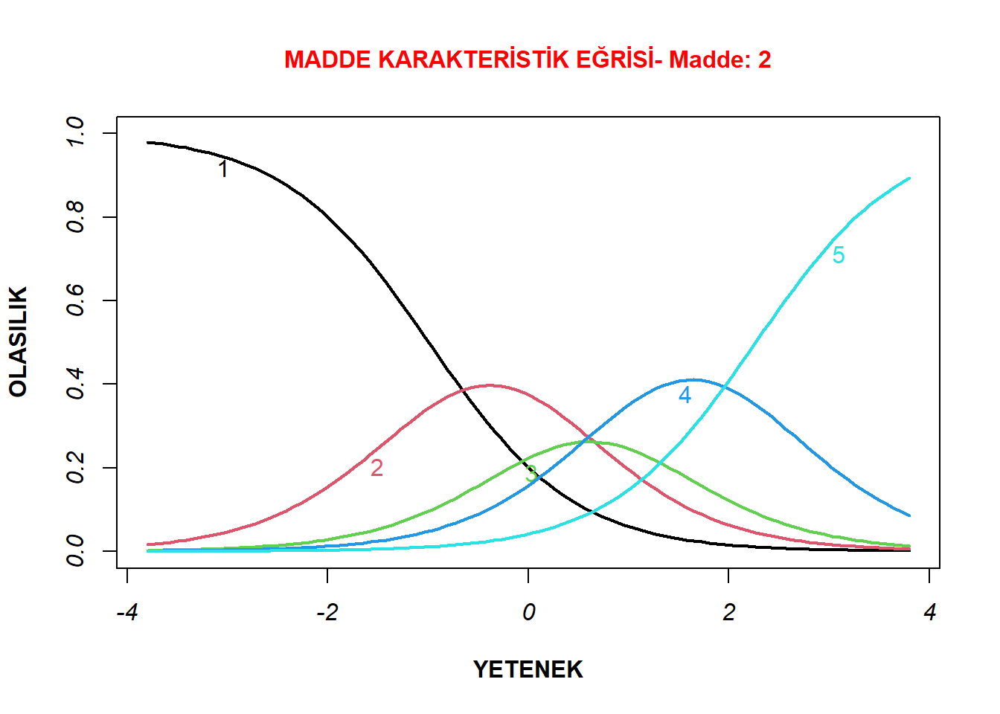
Görülen ilk grafik diğer maddelere göre daha ideal dağılım gösteren bir maddeye aittir. Bu maddenin eğrileri tüm yetenek düzeylerini kapsayacak şekilde sivrilip dağılmaktadır. Örneğin, sıfır yetenek düzeyinde bir bireyin üçüncü kategoride yer alma olasılığı en yüksek düzeydedir. Benzer şekillerde diğer kategorilerin de yüksek olasılık ile temsil ettikleri yetenek düzeyleri belirgin bir şekilde görülmektedir. Bu durumda bu maddenin ayırt edicilik düzeyinin yüksek olması beklenir. Madde parametreleri çıktısında da görüleceği üzere, bu maddeye ait ayırt edicilik parametresi birinci bileşenin en yüksek ayırt edicilik düzeyidir.
İkinci grafik ise kısmen problemli olduğu düşünülen bir grafiktir. Bu grafiğin daha iyi yorumlanabilmesi için, eksenlerinde yer alan değerler axis() fonksiyonu ile daha detaylı hale getirilmiştir. Ayrıca abline() fonksiyonu ile 0.6 yetenek düzeyine dikey bir çizgi eklenmiştir.
plot(model1_d4a, type="ICC",
xlab= "YETENEK",
cex.main = 1,
ylab = "OLASILIK" ,
lwd= 2, col.main= "red",
font.axis= 3,
font.lab=2,
main = "MADDE KARAKTERİSTİK EĞRİSİ- Madde: 2",
items = 2)
axis(2, at = seq(0, 1, by = .1))
axis(1, at = seq(-4, 4, by = .1))
abline(v=.6)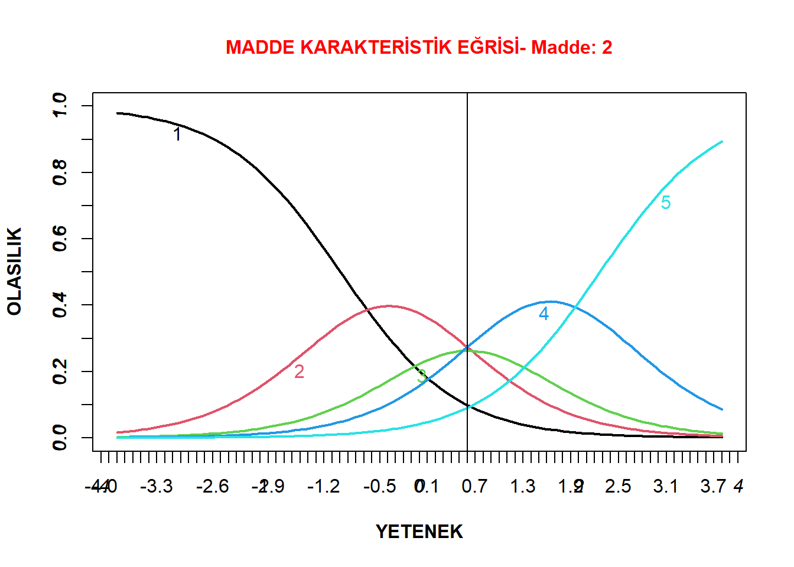
Maddenin eğrileri incelendiğinde, 0.6 yetenek düzeyinde bir bireyin ikinci, üçüncü ve dördüncü kategorileri seçme olasılıklarının birbirlerine çok yakın olduğu görülmektedir. Bu durum, maddenin ayırt ediciliğini olumsuz olarak etkilemektedir. Daha önceki çıktılardan bilindiği üzere bu maddeye ait ayırt edicilik parametresi birinci bileşenin en düşük ayırt edicilik düzeyidir. Ayrıca, bu maddenin üçüncü kategorisinin sivrilmediği de dikkat çekmektedir. Bu durumda bu maddenin üçüncü kategorisinin çıkarılarak dört kategorili bir maddeye dönüştürülmesi düşünülebilir. Bir başka seçenek ise bu maddenin ölçekten çıkarılması ve analizlerin yeniden yapılması olabilir.
1.d. Test Bilgi Fonksiyonu
Her iki bileşen için de test bilgi fonksiyonları aşağıdaki kod satırları kullanılarak elde edilmiştir:
plot(model1_d4a, type="IIC", items = 0, xlab= "YETENEK", cex.main = 1, main = "TEST BİLGİ FONKSİYONU", ylab = "BİLGİ" , lwd= 2, col.main= "red", col="blue", font.axis= 3, font.lab=2)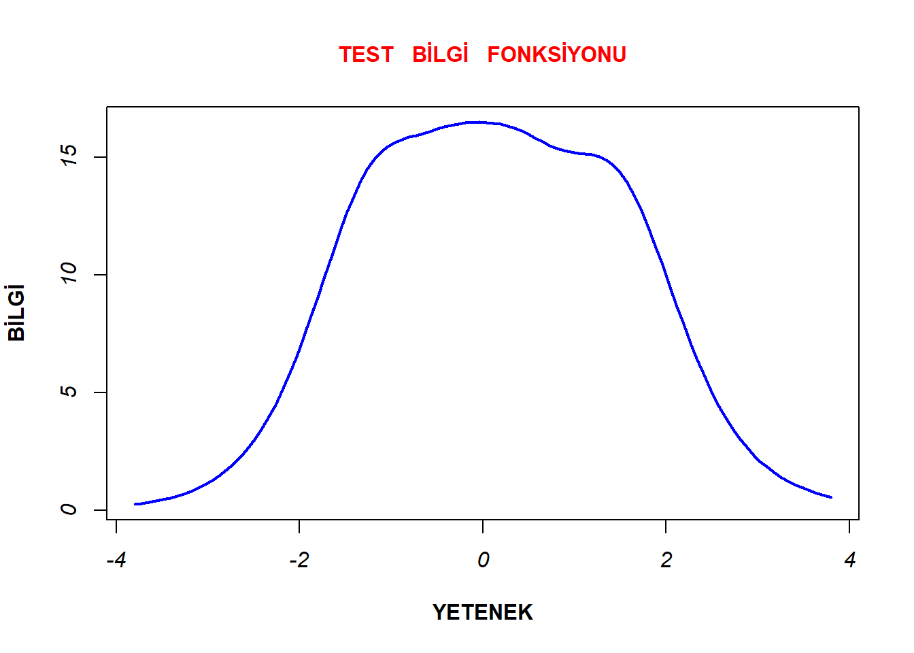
plot(model1_d4b, type="IIC", items = 0, xlab= "YETENEK", cex.main = 1, main = "TEST BİLGİ FONKSİYONU", ylab = "BİLGİ" , lwd= 2, col.main= "red", col="blue", font.axis= 3, font.lab=2)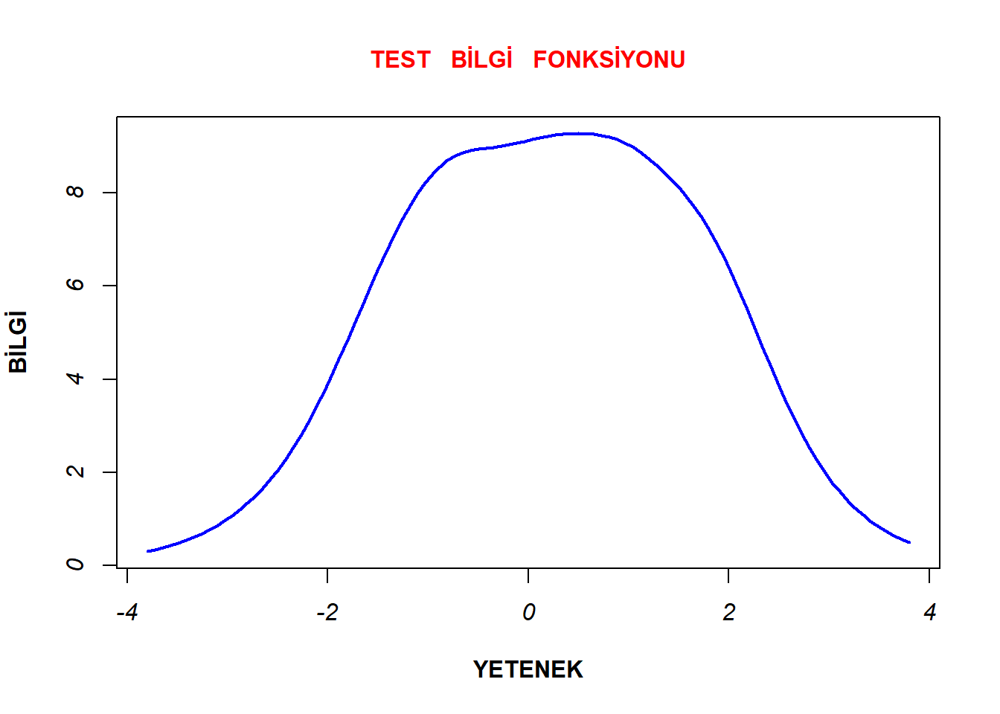
Test bilgi fonksiyonlarının 0 yetenek düzeyinde en yüksek seviyede olduğu, -/+ 2 yetenek düzeylerinde sert bir şekilde düşmeye başladığı ve -/+ 4 yetenek düzeylerinde en düşük seviyesinde olduğu görülmektedir. Bu durumda her iki bileşenin de en çok 0 yetenek düzeyinde bilgi sağladığı ve -2 ile +2 aralığında yüksek düzeyde bilgi sağladığı söylenebilir. Ancak bu aralığın ötesinde sağlanan bilginin hızla azaldığı düşünülebilir.
Çalışmanın bu aşamasında madde bilgi eğrileri de aşağıdaki kod satırları kullanılarak elde edilmiştir:
plot(model1_d4a, type="IIC",xlab= "YETENEK", cex.main = 1, ylab = "BİLGİ" , col.main= "red", font.axis= 3, font.lab=2, main = "1. BİLEŞEN MADDE BİLGİ EĞRİLERİ")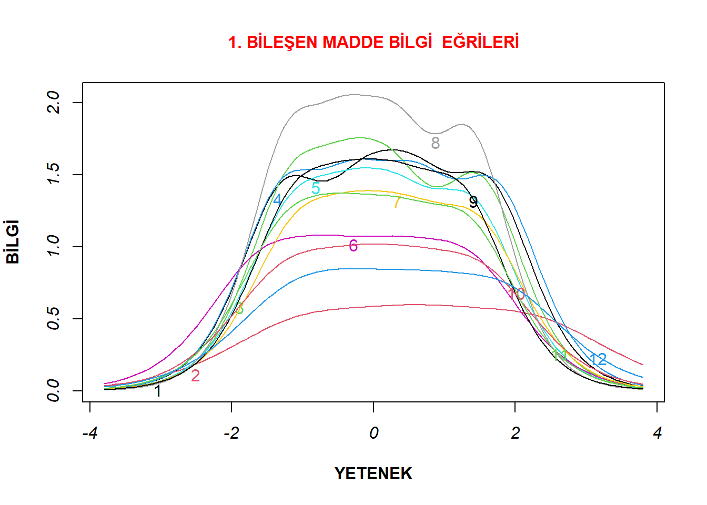
plot(model1_d4b, type="IIC",xlab= "YETENEK", cex.main = 1, ylab = "BİLGİ" , col.main= "red", font.axis= 3, font.lab=2, main = "2. BİLEŞEN MADDE BİLGİ EĞRİLERİ")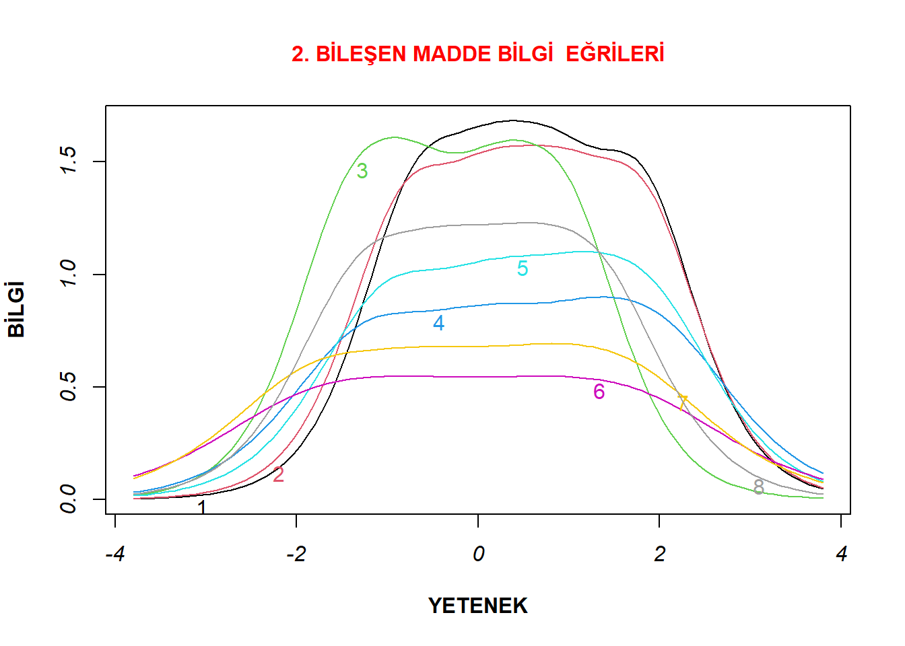
Bunlar incelendiğinde ise her iki bileşen için de maddelerin ölçülen özelliği geniş bir yetenek puanı ölçeğinde ölçtüğü görülmektedir. Birinci bileşen içerisinde en düşük bilgi sağlayan maddenin ikinci madde olduğu dikkat çekmektedir. Yine bilgi eğrisi en yüksek maddenin birinci bileşen için sekizinci madde olduğu da görülmektedir. Bunlar, bir önceki bölümde kısmi problemli ve ideal dağılımlı olarak incelenen maddelerdir. Eğer ikinci bileşen için birer madde seçilecek olsaydı, o bileşene ait altı ve üç numaralı maddeler sırasıyla kısmi problemli ve ideal maddelere örnek olarak seçilebilirdi.
1.e. Yetenek Puanları
Çok kategorili puanlanan maddelere yönelik olarak yürütülen analizlerin son aşamasında bireylere ait yetenek puanları hesaplanmış ve bunların dağılımı incelenmiştir. Analizlerin bu aşamasında şu kod satırları kullanılarak birinci ve ikinci bileşen için yetenek puanları ayrı ayrı hesaplanmıştır.
Kod
#BİLEŞEN-1
score_d4a<- factor.scores(model1_d4a)
oruntu_d4a<- score_d4a[[1]]
oruntu_d4a$toplam<- rowSums((oruntu_d4a[,1:12]))
score_d4a<- factor.scores(model1_d4a)
oruntu_d4a<- score_d4a[[1]]
oruntu_d4a$toplam<- rowSums((oruntu_d4a[,1:12]))
theta_d4a <- numeric()
for (i in 1:419){
for (j in 1:1000){
if (sum (oruntu_d4a[i, 1: 12] == data4a[j, 1:12])==12)
theta_d4a[j] <- oruntu_d4a[i, 15] }}
data4a$theta<-theta_d4a
data4a$toplam<-rowSums(data4a[1:12])
#BİLEŞEN-2
score_d4b<- factor.scores(model1_d4b)
oruntu_d4b<- score_d4b[[1]]
oruntu_d4b$toplam<- rowSums((oruntu_d4b[,1:12]))
theta_d4b <- numeric()
for (i in 1:404){
for (j in 1:1000){
if (sum (oruntu_d4b[i, 1: 8] == data4b[j, 1:8])==8)
theta_d4b[j] <- oruntu_d4b[i, 11] }}
data4b$theta<-theta_d4b
data4b$toplam<-rowSums(data4b[1:8])Bunun ardından describe() fonksiyonu ile birey yetenek puanlarının betimsel istatikleri elde edilmiştir. Ayrıca hist() fonksiyonu ile histogram grafikleri oluşturulmuştur. Şu kod satırları kullanılmıştır.
Kod
#BİLEŞEN-1
describe(data4a$theta) vars n mean sd median trimmed mad min max range skew kurtosis se
X1 1 1000 0.05 0.93 0.02 0.05 0.92 -2.3 2.59 4.88 0.03 -0.2 0.03Kod
hist(data4a$theta, xlab= "YETENEK", cex.main = 1, ylab = "FREKANS" , col.main= "red", font.axis= 3, font.lab=2, main = "1. BİLEŞEN BİREY YETENEK PUANLARI")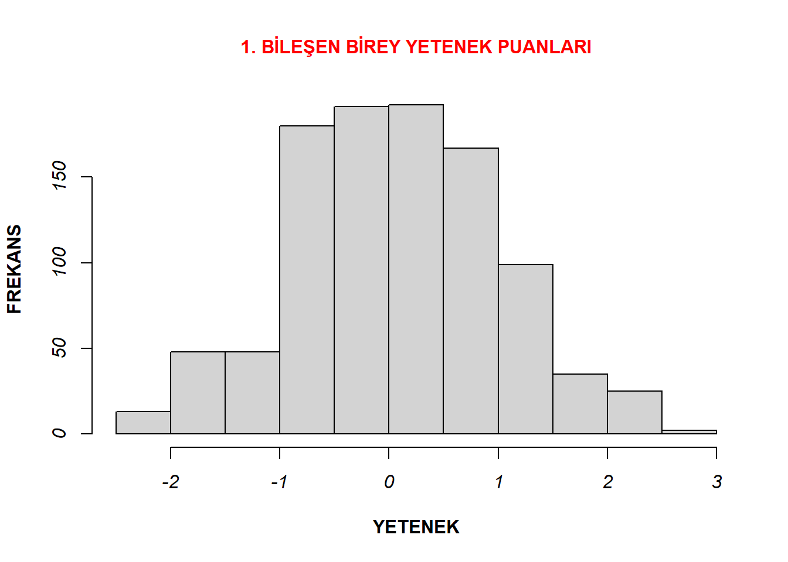
Kod
#BİLEŞEN-2
describe(data4b$theta) vars n mean sd median trimmed mad min max range skew kurtosis se
X1 1 1000 -0.01 0.92 0.05 0 0.89 -2.19 2.5 4.69 -0.04 -0.14 0.03Kod
hist(data4b$theta, xlab= "YETENEK", cex.main = 1, ylab = "FREKANS" , col.main= "red", font.axis= 3, font.lab=2, main = "2. BİLEŞEN BİREY YETENEK PUANLARI")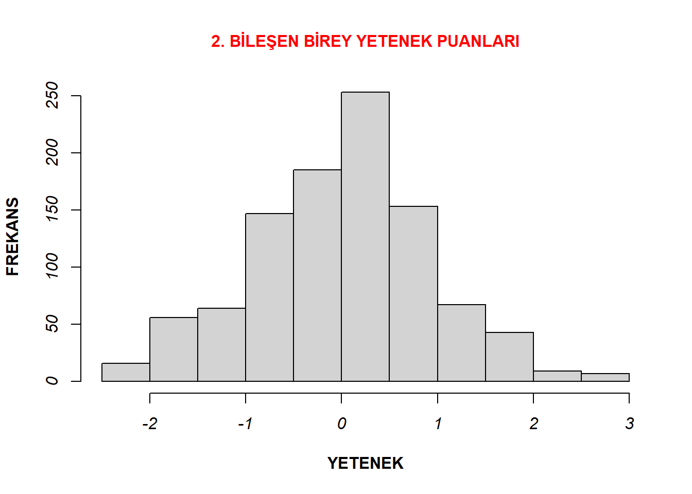
Her iki bileşene ait betimsel istatikler ve histogram grafikleri incelendiğinde, ortalamalarının sıfıra, standart sapmalarının da bire çok yakın olduğu görülmektedir. Bu durum her iki bileşenden elde edilen verinin de normal dağılım sergilediğini göstermektedir.
2. İki Kategorili Maddelere Yönelik Aşamalar
Çalışmanın ikinci araştırma sorusu kapsamında, çok kategorili maddelerden oluşan veri setinin iki kategoriye dönüştürülmesi gerekmektedir. Çok kategorili puanlanan maddelerin iki kategorili olarak kodlanmasında izlenen adımlar şunlardır:
data5<- data4
for(i in 1:1000) {
for(j in 1:20) {
if(data5[i,j] <= mean(data5[,j])) {data5[i,j] <- 0}
else data5[i,j] <- 1
}
}2.a. Varsayımların Kontrolü ve Uygun MTK Modeli
İki kategorili puanlanan maddelerden oluşan ölçeğin Madde Tepki Kuramı çerçevesinde incelenmesi sürecinde öncelikle uygun MTK modelinin belirlenebilmesi için varsayım kontrolleri yapılmıştır. Bu bağlamda, tek boyutluluk ve yerel bağımsızlık varsayımları ile model-veri uyumu kontrol edilmiştir. Tek boyutluluk varsayımı kontrolü için paralel analiz, yamaç birikinti grafiği ve faktör analizi kullanılmıştır. Bu amaçla, Psych paketinden (Revelle, 2020) faydalanılmıştır.
fa.parallel(data5, main = "PARALEL ANALİZ SAÇILIM GRAFİĞİ", ylabel = "Temel Bileşenler ve Faktör Analizi Özdeğerleri")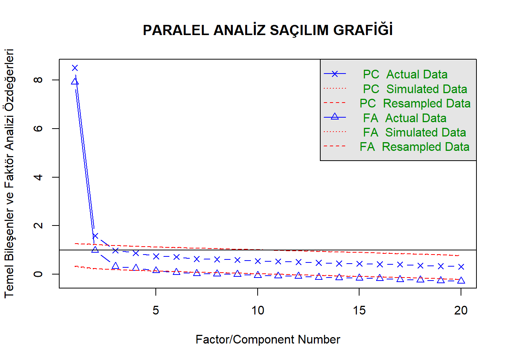
Parallel analysis suggests that the number of factors = 4 and the number of components = 2 Paralel analiz ve yamaç birikinti grafiği iki bileşenli bir yapıyı göstermektedir. Bu nedenle hem iki hem de tek bileşenli modeller oluşturulmuştur. Aşağıda izlenen adımlar sonrası elde edilen modeller ait faktör yükleri görülebilir.
Faktör yüklerinin her madde için her iki modelde de .60’nın üzerinde olduğu görülmektedir. Tek bileşenli yapının açıkladığı varyansın ise %61 olduğu anlaşılmaktadır. Bunun yanı sıra, iki bileşenli yapının birinci bileşenin %40, ikinci bileşenin %28 olmak üzere toplamda %68 oranında açıklanan varyansa sahip olduğu görülmektedir. Açıklanan varyans açısından modeller arasındaki farkın çok büyük olmadığı düşünüldüğünden, ileri analizlere tek bileşenli model ile devam edilmesine karar verilmiştir.
Yerel bağımsızlık varsayımının kontrolü için Yen’in Q analizi (Yen, 1984) uygulanmıştır. Bu süreçte sirt paketinden (Robitzsch, 2020) yararlanılmış ve aşağıdaki adımlar izlenmiştir.
Kod
model <- rasch.mml2(data5)
model.wle <-wle.rasch( dat=data5, b=model$item$b )
yenq3 <-Q3( dat=data5, theta=model.wle$theta, b=model$item$b)Yerel bağımsızlık varsayımının karşılandığı görülmektedir. Bu nedenle model-veri uyumu incleme aşamasına geçilmiştir. Bu aşamada ltm paketinden (Rizopoulos, 2006) faydalanılmıştır. Aşağıdaki kod satırları kullanılarak elde edilen Benzerlik oranı tabloları görülebilir.
Likelihood Ratio Table
AIC BIC log.Lik LRT df p.value
model1 15975.79 16078.85 -7966.89
model2 15913.21 16109.52 -7916.61 100.58 19 <0.001anova(model1, model3)
Likelihood Ratio Table
AIC BIC log.Lik LRT df p.value
model1 15975.79 16078.85 -7966.89
model3 15914.14 16208.61 -7897.07 139.64 39 <0.001anova(model2, model3)
Likelihood Ratio Table
AIC BIC log.Lik LRT df p.value
model2 15913.21 16109.52 -7916.61
model3 15914.14 16208.61 -7897.07 39.07 20 0.007Akaike ve Bayesian bilgi kriterleri incelendiğinde, üç model arasında ikinci modelin manidar farkla en uygun model olduğu görülmektedir. Bu nedenle, devam analizleri iki parametreli model ile yürütülmüştür.
2.b. Madde Parametreleri
Model-veri uyumu sınandıktan ve en uygun model belirlendikten sonra, madde parametrelerinin incelenmesi aşamasına geçilmiştir. Model-2 üzerinden coef() fonksiyonu kullanılarak elde edilen madde parametreleri aşağıdadır.
coef(model2) Dffclt Dscrmn
L1 -0.8112296 2.832181
L2 -0.7312085 1.933827
L3 -0.8181936 2.659799
L4 -0.8109842 3.100650
L5 -0.8380050 2.394060
L6 -1.0180088 2.070947
L7 -0.8694781 2.103077
L8 -0.8977956 2.683691
L9 -0.7951705 2.798913
L10 -0.8580558 2.207506
L11 -0.8789145 2.322482
L12 -0.8528908 1.705619
L13 -0.6390827 2.246105
L14 -0.6903395 2.247931
L15 -0.8834606 2.517332
L16 -0.7716486 2.330535
L17 -0.7333232 2.334138
L18 -1.1852158 1.497807
L19 -1.0471877 1.896025
L20 -0.8162163 2.864486Çıktılar incelendiğinde, güçlük parametresi en yüksek olan maddenin 13. madde olduğu göze çarpmaktadır. Yetenek düzeyi -.63’ten daha yüksek olan bireyler bu maddeyi %50’den daha yüksek bir ihtimalle doğru cevaplayacaklardır.
2.c. Örnek Madde Karakteristik Eğrileri
Çalışmanın bu aşamasında, iki kategorili puanlanan maddelerin analizinde madde karakteristik eğrisi ideal ve sorunlu olan birer madde incelenmiş ve yorumlanmıştır. Bu nedenle, öncelikle birinci bileşeni oluşturan tüm maddelerin madde bilgi eğrileri plot() fonksiyonu ile oluşturulmuş, aşağıdaki kod satırları kullanılmıştır:
plot(model2, type="IIC",xlab= "YETENEK", cex.main = 1, ylab = "BİLGİ" , col.main= "red", font.axis= 3, font.lab=2, main = "MADDE BİLGİ EĞRİLERİ")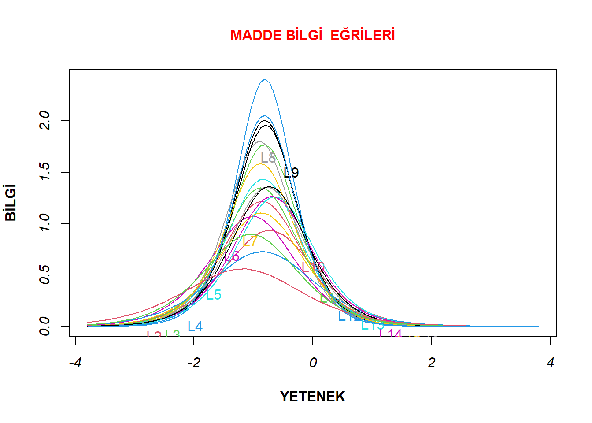
Madde bilgi eğrileri incelendiğinde, en çok bilgiyi dördüncü maddenin sağladığı görülmektedir. En düşük bilgi sağlayan maddelerden birisinin ise 12. madde olduğu görülmektedir. Bu nedenle madde karakteristik eğrilerinin incelenmesi sürecinde örnek olarak bu iki madde tercih edilmiştir. Bu maddelere ait karakteristik eğrileri aşağıdaki kod satırları ile elde edilmiştir.
plot(model2, type="ICC", items = c(4,12), labels = c("madde-4", "madde-12"), legend = T, xlab= "YETENEK", cex.main = 1, main = "MADDE KARAKTERİSTİK EĞRİSİ", ylab = "OLASILIK" , lwd= 2)
points(-.81, .5, lwd= 3, pch= 3)
text(-.81, .5, lwd= 2, labels = "b par.: -0.81", pos = 4)
points(-.85, .5, lwd= 3, col= "red", pch=5)
text(-.85, .5, lwd= 3, labels = "b par.: -0.85", pos = 2, col= "red")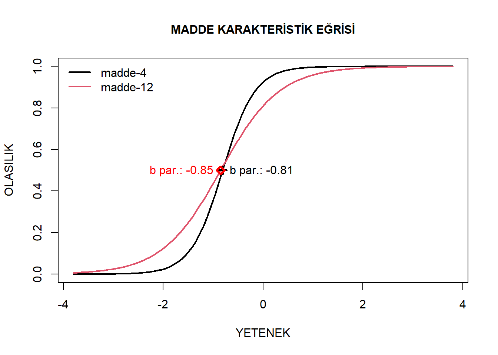
Dört ve 12 numaralı maddelerin güçlük parametreleri birbirlerine oldukça yakındır. Ancak dördüncü madde diğerine göre daha dik bir karakteristik eğrisine sahiptir. Bu durum iki maddenin ayırt edicilik parametrelerindeki farklılıktan kaynaklanmaktadır. Dördüncü madde yüksek bir ayırt edicilik parametresi ile ideal bir madde gibi görünürken, 12. madde düşük bir ayırt edicilik parametresi ile kısmi problemli bir madde görüntüsü sergilemektedir. Yine de 12 numaralı maddenin parametre değerlerinin kabul edilebilir olduğu da vurgulanmalıdır.
2.d. Test Bilgi Fonksiyonu
İki kategorili puanlanan maddelere yönelik test bilgi fonksiyonunu elde etmek için aşağıdaki kod satırları kullanılmıştır. locator() fonksiyonu aracılığı ile test bilgi fonksiyonunun tepe noktası tespit edilmiş ve ardından abline() fonksiyonu ile tepe noktasının koordinat çizgileri grafiğe eklenmiştir.
plot(model2, type="IIC", items = 0, xlab= "YETENEK", cex.main = 1, main = "TEST BİLGİ FONKSİYONU", ylab = "BİLGİ" , lwd= 2,col.main="red",col="blue", font.axis= 3, font.lab=2)
axis(2, at = seq(0, 30, by =5))
axis(1, at = seq(-4, 4, by = .1))
abline(h=27.74, v=-.8451, lty=4)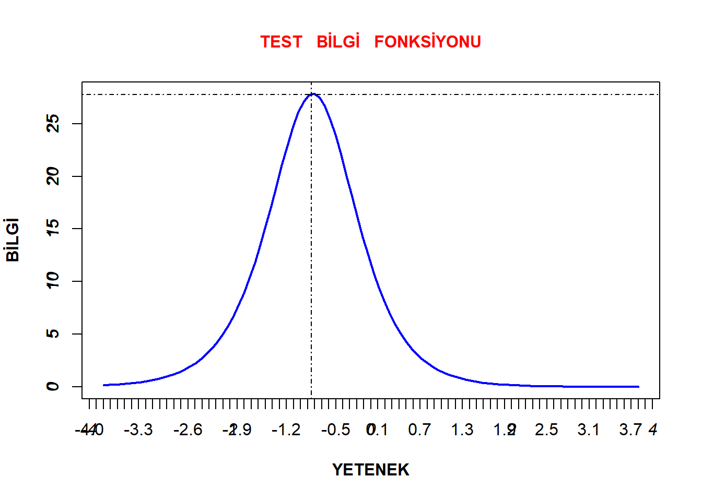
Test bilgi fonksiyonunun -0.84 yetenek düzeyinde en yüksek seviyede olduğu, -1.5 ile 0 yetenek düzeylerinde sert bir şekilde düşmeye başladığı ve -2.8 ve 1.1 yetenek düzeylerinde en düşük seviyesinde olduğu görülmektedir. Bu durumda en yüksek bilginin bu ölçekte -.8 yetenek düzeylerinde sağlandığı söylenebilir.
Bu durumda her iki bileşenin de en çok 0 yetenek düzeyinde bilgi sağladığı ve -2 ile +2 aralığında yüksek düzeyde bilgi sağladığı söylenebilir. Ancak bu aralığın ötesinde sağlanan bilginin hızla azaldığı düşünülebilir.
2.e. Yetenek Puanları
İki kategorili puanlanan maddelere yönelik olarak yürütülen analizlerin son aşamasında bireylere ait yetenek puanları hesaplanmış ve bunların dağılımı incelenmiştir. Şu kod satırları ile hesaplanan yetenek puanları veri setine eklenmiştir.
score_d5<- factor.scores.ltm(model2)
oruntu_d5 <- score_d5[[1]]
oruntu_d5$toplam <- rowSums((oruntu_d5[,1:12]))
theta_d5 <- numeric()
for (i in 1:454){
for (j in 1:1000){
if (sum (oruntu_d5[i, 1: 20] == data5[j, 1:20])==20)
theta_d5[j] <- oruntu_d5[i, 23] }}
data5$theta<-theta_d5
data5$toplam<-rowSums(data5[1:20])Bunun ardından describe() fonksiyonu ile birey yetenek puanlarının betimsel istatikleri elde edilmiştir. Ayrıca hist() fonksiyonu ile histogram grafikleri oluşturulmuştur. Bu süreçlerde kullanılan kod satırları şunlardır:
#BİLEŞEN-1
describe(data5$theta) vars n mean sd median trimmed mad min max range skew kurtosis
X1 1 1000 -0.03 0.81 0.05 0.04 1.24 -2.17 0.89 3.06 -0.45 -0.8
se
X1 0.03hist(data5$theta, xlab= "YETENEK", cex.main = 1, ylab = "FREKANS" , col.main= "red", font.axis= 3, font.lab=2, main = "BİREY YETENEK PUANLARI")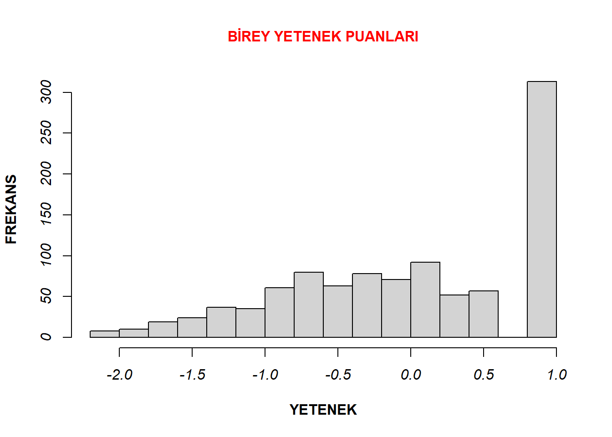
İncelenen iki kategorili puanlanan veriye ait betimsel istatikleri incelendiğinde, ortalamanın -.03, standart sapmanın da .81 olduğu görülmektedir. Bu durum verinin normal dağıldığı şeklinde yorumlanabilir, ancak histogram grafiği incelendiğinde yetenek puanlarının -2 ile 1 arasında dağılım gösterdiği ve 1 yetenek puanında bir yığılma olduğu görülmektedir. Bu durum, verilerin çok kategorili puanlanan maddelerden ortalamaları doğrultusunda iki kategorili puanlanan maddelere çevrilmesiyle ilişkisi olduğu düşünülmektedir.
SONUÇ
Bu çalışma simüle edilmiş veri ile yürütülmüştür. Çıktılarında bu nedenle temel problemler görülebilmektedir. Yine de aşama aşama MTK ile madde analizinin R ile nasıl yapılacağına dair bana güzel bir referans olmaktadır. Bu çalışma, bir ders raporu olarak hazırlanmıştır.